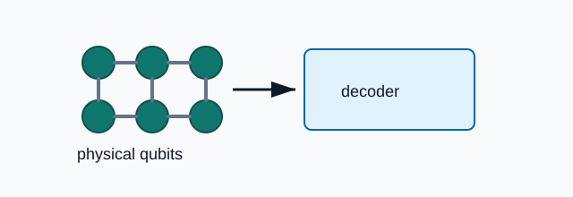

Quantum error correction combines physical qubits into a logical memory. The fixture keeps the structure of a real arXiv physics paper while using compact text suitable for deterministic regression tests.
The paper reports real-time decoding alongside distance scaling. Bilin should preserve this paragraph as source Markdown and keep citation placeholders such as Ref. [1].

| Quantity | Value | Role |
|---|---|---|
| Distance | 7 | logical memory |
| Cycles | 10^6 | real-time decoder run |